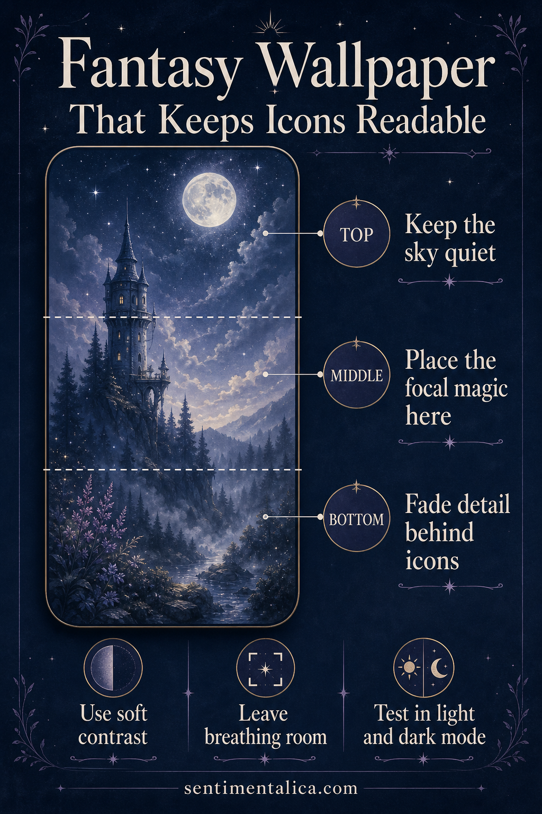

Fantasy wallpaper succeeds when the magic survives daily use. A detailed castle may be beautiful, but if the clock disappears into its windows and app labels sit across bright stars, the screen becomes tiring. Designing in three zones solves most of the problem.

Keep the top quiet
The upper portion usually carries time, date, and status information. Use sky, mist, water, or a broad dark gradient here. Fine stars can work if their contrast is low. Keep moons, windows, faces, and bright magical effects away from the exact clock position.
Put the story in the middle
The central zone is where the focal magic belongs: one tower, gate, moonlit figure, or glowing path. Choose a clear silhouette and allow softer scenery around it. A single destination feels more mysterious than many equally sharp symbols.
Fade detail behind controls
The bottom needs enough calm for icons and shortcuts. Reduce sharpness, saturation, or local contrast rather than simply darkening everything. A mist layer or soft foreground shadow can preserve the palette while making labels readable.
Test the wallpaper in both light and dark modes, then check it with notifications present. If the art still has one clear destination and the interface can be read at a glance, the composition is working.
Visuals in this article were created with AI assistance and art-directed for Sentimentalica.
Discover more visual storytelling ideas in the Sentimentalica journal archive.